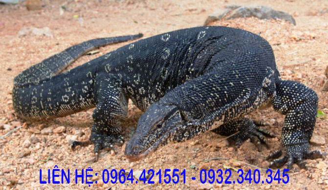
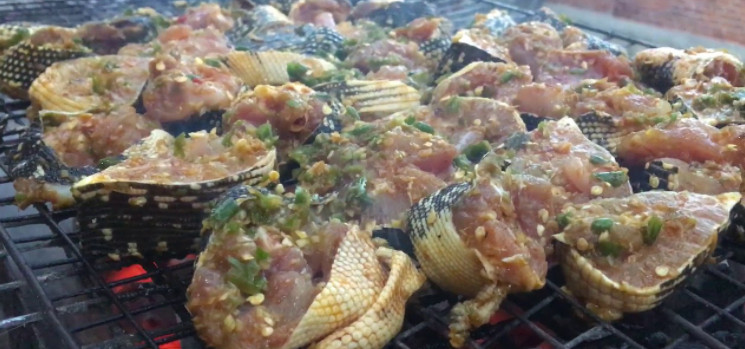
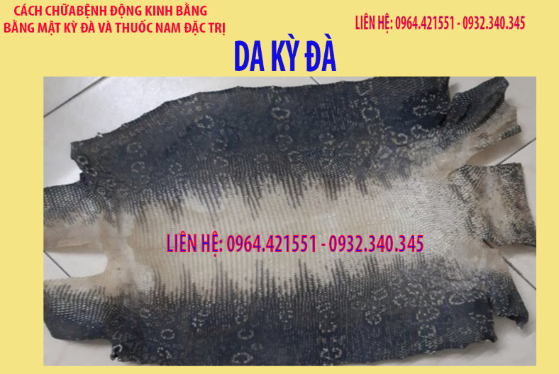

CON KỲ ĐÀ CÓ TÁC DỤNG THẾ NÀO¶
Con kỳ đà nó khá giống với con tắc kè có tên khoa học là Varanus
Con kỳ đà trưởng thành nó khá to trọng lượng trung bình 8 đến 10 kg, có những con kỳ đà to trọng lượng lên đến 30kg. Toàn bộ con kỳ đà đều có thể sử dụng được, ngoài giá trị dinh dưỡng thì con kỳ đà còn dùng để làm thuốc.
1. Thịt kỳ đà.¶
Thịt kỳ đà ăn ngon bổ dưỡng và chế biến được nhiều món ăn như: Thịt kỳ đà nướng, thịt kỳ đà xào, lẩu kỳ đà, ruốc kỳ đà. Cách chế biến cũng giống như làm thịt gà, thịt lợn.
Thịt kỳ đà ăn ngon, thịt thơm ngon, bổ dưỡng, có phần gần giống thịt gà.
Ngoài giá trị dinh dưỡng, thịt kỳ đà rất tốt cho người bị động kinh, bị hen phế quản, hen suyễn, tai biến, cao huyết áp.
2. Tác dụng của thịt kỳ đà.¶
Ngoài việc dùng làm thức ăn thì thịt kỳ đà còn dùng để cho người bị bệnh động kinh, bệnh hen phế quản, bệnh hen suyễn, bệnh tai biến, bệnh cao huyết áp có hiệu quả.
Cách chế biến thịt có thể xào, nấu, nướng, làm ruốc cho người bệnh ăn.
Ngoài thịt còn xương kỳ đà dùng để nấu cháo cho người bệnh dùng dần.
3. Đuôi kỳ đà¶
Đuôi kỳ đà dùng tán bột cho người bị bệnh động kinh dùng, thường phơi khô, sao vàng rồi tán bột.
4. Da kỳ đà¶
Da kỳ đà ngoài dùng cho người bị động kinh còn dùng cho người bị mề đay, dị ứng mẩn ngứa dùng.
Cách dùng là lấy da kỳ đà phơi khô, cắt nhỏ rồi cho lên chảo rang giòn, tán bột hoặc dùng trực tiếp, da kỳ đà rang giòn lên ăn cũng rất ngon.
6. Mỡ kỳ đà¶
Mỡ kỳ đà ngoài việc dùng làm thực phẩm như xào, rán còn dùng làm thuốc, mỡ kỳ đà có tác dụng như mỡ trăn, dùng bôi ngoài chữa bỏng, chữa nẻ da, làm liền sẹo còn có tác dụng dưỡng da, chữa trị nẻ rất tốt.
7. Lưỡi kỳ đà¶
Thường dùng đốt lên để chữa xoang, còn dùng tán bột để chữa bệnh động kinh.
8. Các bài viết có thể bạn chưa xem¶
Để biết các thông tin chi tiết hơn về mật kỳ đà mời các bạn xem bài viết tại đây:
Để biết về giá mật kỳ đà mời các bạn xem bài viết tại đây: